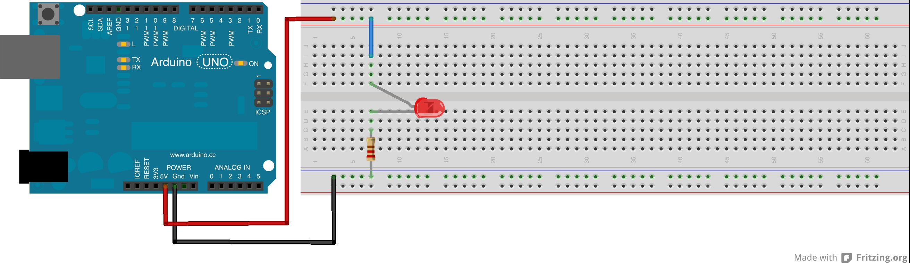
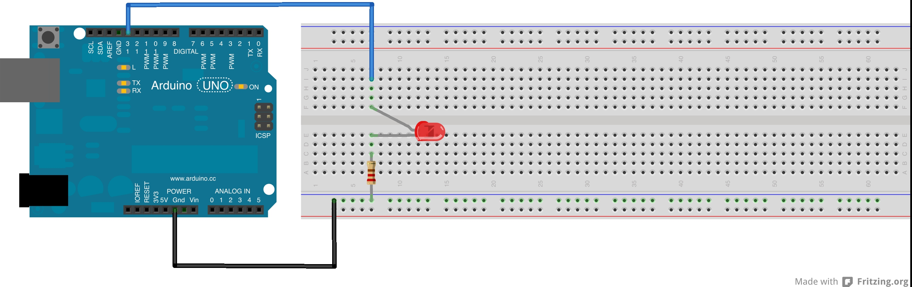
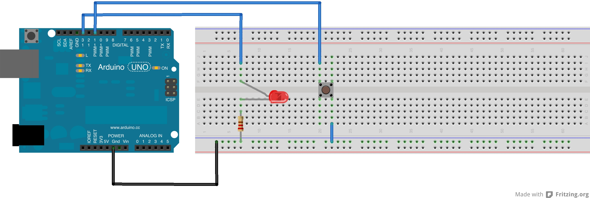

Arduino
A Brief
Introduction
Josh "Breadboard" Maxey | @jeshuamaxey
28th March 2013
About this presentation
This presentation is an gentle introduction to the wonderful world of Arduino. It accompanies a (hopefully ever expanding) series of tutorials that can be found over on my website
I will try to assume no prior knowledge of electronics or programming, though both will help a great deal when working with the Arduino.
One last note, this presentation is a multidimensional. The navigation arrows in the bottom right hand corner indicate whether there is a slide below the one you are currently viewing. Make sure to navigate down through these before flicking right to next next section. Have a go now.
See that wasn't so hard!
Now scoot right and get learning
What this presentation covers
- An Introduction to Arduino
- Some interesting applications
- How do you use an Arduino
- My First Circuit
- Digital Inputs & Outputs
Introduction
The Arduino website says:
Arduino is an open-source electronics prototyping platform based on flexible, easy-to-use hardware and software. It's intended for artists, designers, hobbyists, and anyone interested in creating interactive objects or environments.
Follow the slides down as we deconstruct what all this means.
Open Source
As the saying goes, the best things in life are free. Open source means that all the software we use with our Arduino is free to download, adapt and distribute. More than that, open source encapsulates a culture of sharing and collaboration.
It wouldn't be a stretch to describe these guides and tutorials as "open source learning".
Electronics Prototyping Platform
Arduino is designed for electronics. It provides a quick and easy way to control electronic components and devices with easy to pick up code. This makes it ideal for creating proof of concept products or prototypes.
Secondly, Arduino is a platform of which the Arduino board is just one piece. This platform includes free to use software, expansion boards (called shields), online guides and documentation and a thriving development community. Arduino is much more than a single object.
Intended for Anyone Interested in Creating Interactive Objects
Intended for anyone. ANYONE! Arduino is incredibly accessible. All you need to bring the the equation is a computer and you can start playing almost immediately. You'll also find very quickly that Arduino can make physical objects intelligent and interactive.
Arduinos are...
Open source
Cheap
Accessible
Fast
(Rapid Prototyping)
Expandable
Three cool examples
- The Inebriator
- The Art-O-Matic
- A Laser Harp
The Inebriator
A bar that makes your drinks for you
The Art-O-Matic


A LASER HARP!
A musical instrument crafted from light (and an Arduino!)
How do you use an Arduino?
To get started you need three things:
- A basic knowledge of the Arduino programming language
- An Arduino board & the IDE - there are a few varieties of board but any will do
- A breadboard (and some electrical components and wot nots)
The Arduino Language
The Arduino programming language is based on a language called wiring. The syntax is very similar to C. It is an open source, compiled language
If none of that made any sense, don't panic. We'll be starting of with the very basics of the language.
The Arduino Board
The Arduino board compirises of three mains components:
- The usb port - this allows our computer to communicate with the board and load
- The microprocessor - the barins of the outfit, this stores and executes our code
- Pins - the black sockets dotted around the perimeter allow us to connect our board up to physical objects
The IDE
The Integrated Development Environment (IDE) handles the mundane task of checking your code for errors and translating it into a format the board's microprocessor can understand. This step is know as compiling.

Breadboards
Breadboards are great for quickly plugging up electronics circuits. They come in all shapes and sizes but follow the same general wiring pattern which is important to grasp to be able to build circuits on the fly.
My First Cicuit
Things to note
- Arduino circuits generally use 5 volts
- LEDs have a polarity - it matters what way round they go
- Resistors don't have a polarity
- If you don't connect up a complete circuit, the current can't flow
- LEDs staying on are boring...
I/Os
Inputs and outputs are what make the Arduino great. We can use code to change the state of pins on the Arduino. That way, when we hook up the pins of our Arduino to things in the physical world, we can programme objects.
Et voila, Physical computing!
Setup your IDE
There are a few steps to run through before you can be let loose with your Arduino. You should only have to do this if you're setting up your board for the first time
- Download and install the latest and greatest IDE here
- Let the IDE know what board you're using
- Tell the IDE how you'll be talking to the board
- in all likelyhood you'll want to select the/dev/tty.usbmodem621option from tools -> serial port
Blink & you'll miss it
Coad of Coad Hall
The Arduino expects you to use two functions
void setup() {
//this code runs once at the beginning
}
void loop() {
//this code runs over and over continuously
//once setup() has finished
}
Ready... GO!
When you think you're ready, hit upload. This will compile your code into a form the board's microcontroller can understand and bung it on the chip for you.
If it finds and error, it will point this out to you in the error console below the code editing window.
Verify will compile and error check your code without uploading it to the board. Where's the fun in that I ask?
Blink
int led = 13;
void setup() {
pinMode(led, OUTPUT);
}
void loop() {
//set the pin of our led to be an output
digitalWrite(led, HIGH); //turn the LED on
delay(1000); //wait one second
digitalWrite(led, LOW); //turn the LED off
delay(1000); //wait one second
}
Inputs
Inputs allow our Arduino to respond to changes in the physical world - inputs necessitate logic - our board must make decisions!
A simple latch
The objective: to latch an LED on or off by pressing a single button
Decisions Decisions Decisions
Computers can only answer the most basic of questions; Yes or No? As programmers, it's our job to phrase the questions so we get an answer we can use
In the case of the latch we have to ask the question: Is the button pressed? If so, do I need to turn the LED on or off?
If YES do this, else do that
If the button is pressed and the LED is off then turn the LED on
//if the button is in a LOW state, that means it is being
//pressed, such is the way we have wired our circuit
if(digitalRead(button) == LOW && digitalRead(LED) == LOW) {
digitalWrite(LED, HIGH);
delay(200);
}
LED Latch
/*
* by Joshua Maxey
* created 26/03/2013
*
* requirements:
* - 1 x LED (with suitable resistor)
* - 1 x button (push to make, non latching)
*
**************************************/
int led = 13;
int button = 11;
void setup() {
pinMode(led, OUTPUT);
pinMode(button, INPUT_PULLUP);
Serial.begin(9600);
Serial.println("setup is complete");
}
void loop() {
if (digitalRead(button) == LOW && digitalRead(led) == LOW) {
digitalWrite(led, HIGH);
Serial.println("LED is on");
delay(200);
}
if (digitalRead(button) == LOW && digitalRead(led) == HIGH) {
digitalWrite(led, LOW);
Serial.println("LED is off");
delay(200);
}
}
Ideas to try
Multiple LEDs
Illuminate a line of LEDs one at a time
Using a buzzer
How could you define a function to simplify the task of beeping?